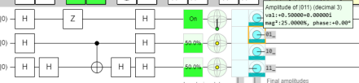
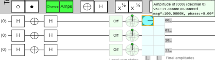

خوارزمية يوزا-دويتش (jozsa-deutch)
هي أول خوارزمية كمومية طبقت على الحاسوب الكمي و هي خوارزمية كمية حتمية اقترحها ديفيد دويتش(Jozsa – Deutsch) عام 1992
و في عام 1998 تم اجراء بعض التحسينات بواسطة (Jozsa Richard )و(وريتشارد يوزا)و(Deutsch David)و (ريتشارد كليف)و و(وأرتور إكيرت) و(وكيارا ماكيافيللو)و( وميشيل موسكا) و على الرغم من قلة استخدام هذه الخوارزمية ،إلا أنها تعتبر أحد الامثلة الاولى على خوارزمية كمومية أسرع بشكل كبير من أي خوارزمية كلاسيكية
تستخدم هذه الخوارزمية فنكشن يسمى بل اوراكل فنكشن،هذا الفنكشن يتصرف كصندوق اسود ياخذ معطيات دون معرفة ما سيحصل له و يعيد مخرجاتها،على فرض ان هذا يمكن ان يكون ثابت او متوازن حصرا
المشكلة
يوجد لدينا دالة -فنكشن تسمى بل اوراكل فنكشن،هذا الفنكشن يتصرف كصندوق اسود ياخذ معطيات ويعيد لنا مخرجات دنن معرفة ما حصل لها ،على فرض ان هذا الفنكشن ثابت او متوازن حصرا
يكون الفنكشن ثابتا :اذا كانت جميع مخرجاته "0 ”او جميعها "1”
مثال
\(f\left(x\right)\::\:even\:\to \:0\)
\(f\left(x\right)\::\:odd\to \:1\)
| input(X) | output f(X) |
|---|---|
| 00 | 0 |
| 01 | 1 |
| 10 | 0 |
| 11 | 1 |
يكون الفنكشن متوازنا : اذا كانت نصف مخرجاته "0 ”ونصفها "1.”
مثل
\(f\::\:constant\:\to \:0\)
| input(X) | output f(X) |
|---|---|
| 00 | 0 |
| 01 | 0 |
| 10 | 0 |
| 11 | 0 |
حل المشكلة
اسرع خوارزمية كلسيكية بحاجة الى \(2^{n-1}\:+1\) وهذا يعني انه يجب عليها تفقد نصف العناصر اضافةالى العنصر الاول بعدالنصف لتقرر نوع الفنكشن (Function)
الحل الكمومي
نحن بحاجة الى تجربة الفنكشن مرة واحدة لمعرفة نوعه
في حال كان الفنكشن متوازنا

يكون احتمال ال"0“=0
في حال كان الفنكشن ثابت

يكون احتمال ال"0“= %100